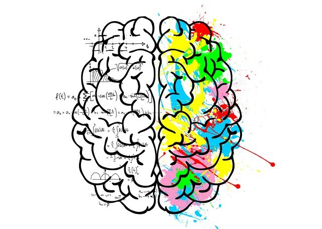

Aprenda a respeito das operações e conectivos da lógica proposicional, entendendo suas aplicações na matemática e programação.
Em lógica e matemática, uma lógica proposicional é um sistema formal no qual as fórmulas representam proposições que podem ser formadas pela combinação de proposições atômicas usando conectivos lógicos e um sistema de regras de derivação.
A lógica proposicional tem como objetivo modelar o raciocínio humano, partindo de frases declarativas (proposições).
Um exemplo é a afirmação “hoje é um dia quente” cujo valor de verdade vai depender de vários fatores: o local sobre o qual implicitamente se está falando, os instrumentos de medidas e de comparação (quais os dados estatísticos de temperatura dessa região), e principalmente de quem está avaliando (duas pessoas, mesmo considerando as mesmas condições nos itens anteriores, podem avaliar diferentemente). Ou seja, o valor verdade de uma proposição não é um conceito absoluto, mas depende de um contexto interpretativo.